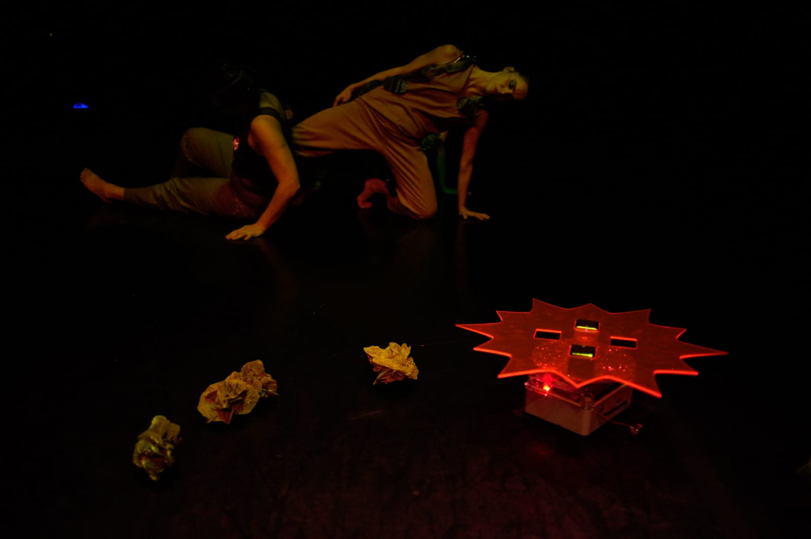
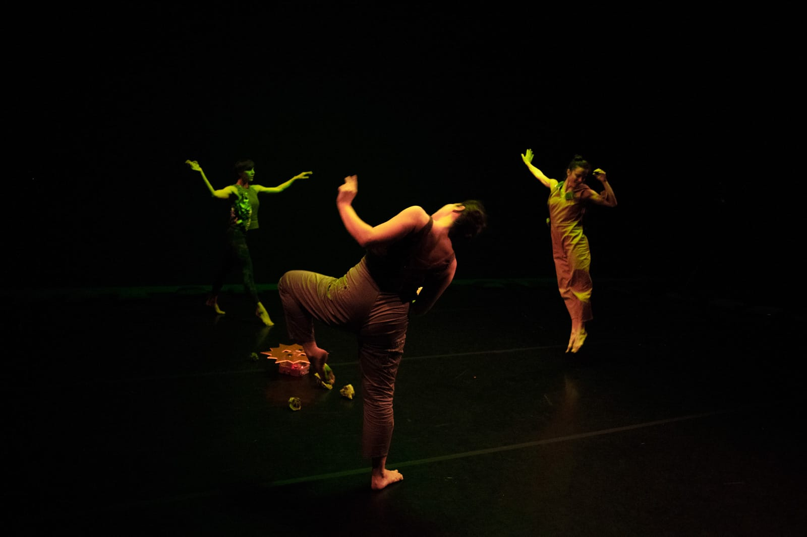
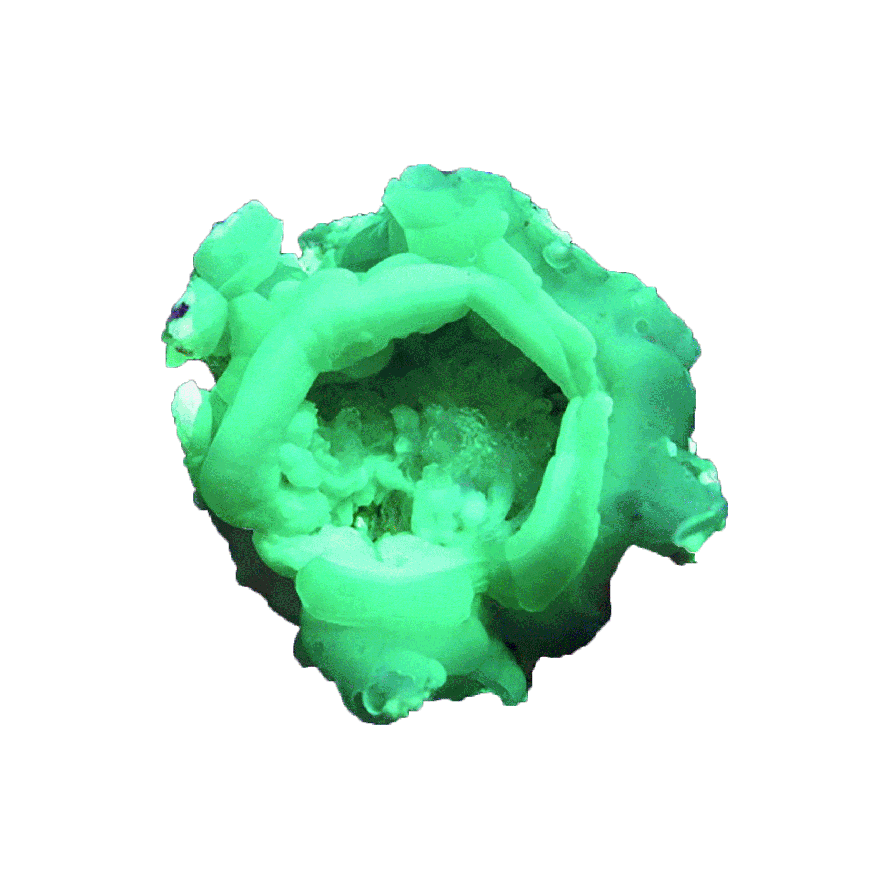

NO RAMA
NO RAMA è un luogo abitato. Diverse specie possono vivere, crescere riprodursi. Qui i corpi si disintegrano in corpi celesti, si trasformano in piante, animali, minerali. NO RAMA è un luogo geograficamente vicino al nostro, non lontano e non impossibile, ma con continue incursioni dell’altrove-futuro, presente e sotterraneo.
NO RAMA è un eco-sistema artificiale, al suo interno si mescolano elementi organici ed inorganici, umani ed extraumani, ci sono esseri viventi, spinner rose, rose del deserto, segreti, fenomeni meteorologici e campi gravitazionali. Ciascun elemento è connesso reciprocamente agli altri, mescolandosi lo spazio circostante si trasforma continuamente, i corpi assumono nuove forme e forze, il tempo si dilata generando così un sistema diffuso, viscoso e autosufficiente.
NO RAMA è un’indagine (immaginifica) sul futuro di questo pianeta, abitato da una sequenza di forme animali e biotecnologiche. Il suo ecosistema è in grado di adattarsi al riscaldamento globale, alla desertificazione della terra e alla progressiva acidificazione delle acque. Mescolando scienza e finzione, NO RAMA è soltanto una tra le possibilità.
Produzione Cab 008.
Coproduzione Teatro Metastasio di Prato e FOG Triennale Milano Performing Arts.
Con il sostegno di L’Arboreto – Teatro Dimora di Mondaino, Armunia / Festival Inequilibrio,
Centro nazionale di produzione / Virgilio Sieni, spazioK.Kinkaleri, Azienda Speciale Palaexpo –
Mattatoio.
Con il sostegno di Regione Toscana, MiBACT e Comune di Firenze.
Il progetto è stato realizzato con il contributo di ResiDance XL – luoghi e progetti di
residenza per creazioni coreografiche, azione della Rete Anticorpi XL / Network Giovane Danza
D'autore coordinata da L’Arboreto – Teatro Dimora di Mondaino.
Ideazione
Annamaria Ajmone
Con
Annamaria Ajmone, Marta Capaccioli, Lucrezia Palandri
Musiche originali e sistemi di diffusione
Francesco Cavaliere
Abito
Jules Goldsmith
Luci e direzione tecnica
Giulia Pastore
“Vi era ancora una questione che a quel tempo – almeno così credo – mi ronzava per il capo, e cioè se, al calar della notte vera, quando lo zoo veniva chiuso al pubblico, per gli abitanti del Nocturama venisse accesa la luce elettrica, affinché, al levarsi del giorno su quel capovolto universo in miniatura, potessero, in qualche modo tranquillizzati, sprofondare nel sonno.”
W.G. Sebald, “Austerlitz”
“La storia della vita consiste quindi in lunghi periodi di noia interrotti occasionalmente dal panico.”
Elizabeth Kolbert, “La sesta estinzione”
Ascolta Francesco Cavaliere
STAMPA
No Rama. Contemporanea Festival 2019"
ARTEXT (2019)